Object构造函数或对象字面量都是使用同一个接口创建很多对象，会产生大量重复代码。
1. 工厂模式
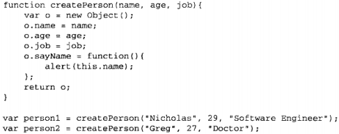
(1) 优点
能够根据接收的参数来构建一个对象，可以无数次地调用这个函数。
(2) 缺点
没有解决对象识别的问题（即怎样知道一个对象的类型）。
2. 构造函数模式
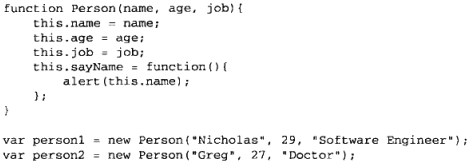
(1) 较工厂模式的优势
- 没有显式地创建对象；
- 直接将属性和方法赋给了this对象；
- 没有return语句。
(2) 实例创建步骤
- 创建一个新对象；
- 将构造函数的作用域赋给新对象；
- 执行构造函数中的代码；
- 返回新对象。
(3) 用法
上图中person1和person2都有一个constructor属性，指向Person。
- 当做构造函数使用；
- 作为普通函数调用（则this指向window）；
- 在另一个对象作用域中使用（例如使用call）。
(4) 缺点
每个方法都要在每个实例上重新创建一次，导致各个实例中的同名方法不是同一个实例。
不完美解决办法：把构造函数中的方法写成另一个函数。（这样就缺少了封装性）
3. 原型模式
原型对象：每个原型对象都默认创建一个constructor属性，也是一个指针，指向prototype所在的函数。
构造函数：每个函数都默认创建一个prototype属性，它是一个指针，指向原型对象。
实例：每个实例都有一个proto属性（ES5中称为[[Prototype]]），它是一个指针，指向原型对象。
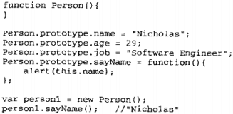
(1) isPrototypeOf()
确定一个实例的[[Prototype]]是否指向某个原型。
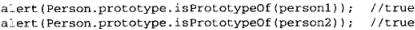
(2) Object.getPrototypeOf()（ES5新增）
获取实例的[[Prototype]]属性。
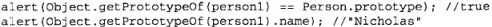
(3) 访问优先级
访问实例属性时先从实例中搜索，找不到再到原型中搜索。
注意：通过对象实例定义的同名属性是属于实例本身的，不能重写原型中的值，但访问这个属性时会优先访问实例中的，相当于屏蔽了原型中的。
(4) hasOwnProperty()
检测一个属性是否存在于对象实例中。
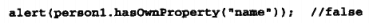
(5) in操作符
in操作符在单独使用时可以用来判断能否通过对象访问一个属性（无论属性是存在于实例中还是原型中）。
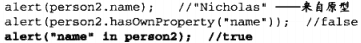
(6) for-in枚举
枚举可枚举的属性（既包括实例中的也包括原型中的）。
(7) Object.keys()
接收1个参数：对象。返回一个包含所有可枚举属性的字符串数组。
(8) Object.getOwnPropertyNames()
接收1个参数：对象。返回一个包含所有实例属性（无论是否可枚举）的字符串数组。
(9) 更简便的原型语法
用这种写法时，由于prototype是用{ }创建，故constructor会指向Object，所以得手动指回来（但用instanceof测试时则仍然是Person而不是Object，因为instanceof测试依据是new）。
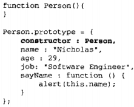
注意：constructor被这样指回来后，其[[Enumerable]]特性会被设为true（原本这个属性是不可枚举的）。可以用Object.defineProperty()改回来。
(10) 原型的动态性
由于实例与原型之间是由指针连接的，所以原型上的任何属性修改都回来实例上立马反映出来。
注意：如果原型是由{ }重写的就不能反映在实例上了，因为这相当于创建了另外一个原型对象，此时的构造函数会指向新原型，而实例仍指向旧原型。
(11) 原生对象的原型
不推荐通过原型来向原生对象原型中添加方法，因为这样可能会在不同实现中导致命名冲突。
(12) 原型对象的缺点
- 它省略了为构造函数传递初始化参数的环节，导致所有实例默认取得相同属性值。
4. 组合构造函数模式和原型模式（最广泛、认同度最高）
(1) 原理
构造函数用于定义实例属性，原型模式用于定于方法和共享的属性。
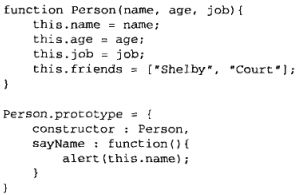
5. 动态原型模式
(1) 原理
通过检查某个应该存在的方法是否有效，来决定是否需要初始化原型。
6. 寄生构造函数模式
(1) 原理
function部分像工厂模式，定义新对象部分则用new。
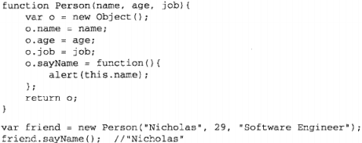
new操作符有四个任务：
(a) 创建一个新对象friend；
(b) friend.__proto__=Person.prototype；
(c) Person.call(friend)。即把this赋给friend，并执行函数。
(d) 检测函数返回值，若是基本类型则返回friend对象本身，若是引用类型对象则返回该引用类型对象。
(2) 优点
这种模式可以在特殊情况下为对象创建构造函数，例如下图中想要创建一种具有额外方法的数组类型：
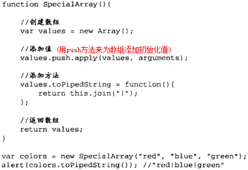
(3) 缺点
如上图，新定义出来的实例有可能不是构造函数的实例（比如这里就跟SpecialArray构造函数没有关系，而是Array的实例，原因请看上面对new操作符的解释），所以不能用instanceof来判断其类型。
由于它的这种缺点，一般在可以使用其它模式的情况下不考虑此模式。
7. 稳妥构造函数模式
(1) 原理
稳妥对象：没有公共属性，而且其方法也不引用this。它最适合在一些安全的环境中（禁用this和new的环境）、防止数据被其它应用程序修改的环境中使用。
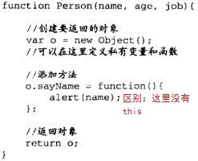
注意：这里与工厂模式的区别是sayName方法中没用this。它的思想是：不想暴露给外面的变量就不提供暴露渠道（比如不使用this，或不挂到o上，而是直接var出来而已）。
注意2：稳妥构造函数模式构造出来的对象也跟构造函数没什么关系，所以也不能用instanceof来检测类型。